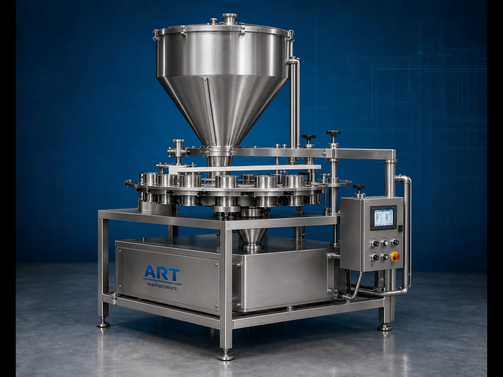

Cup Filler Packing Machine (Automatic Volumetric Filling & Packaging System)
A Cup Filler Packing Machine, also known as a Volumetric Cup Filling Machine, Cup Filling System, or Automatic Cup Filler Packaging Machine, is an industrial packaging solution designed for accurate volumetric filling, dosing, pouch packaging, sachet filling, and automatic packing operations for…

About the Cup Filler
Cup filler systems are widely used for: ✔ Automatic volumetric filling ✔ High-speed pouch packaging ✔ Granule and powder filling ✔ FMCG packaging operations ✔ Continuous industrial production ✔ Packaging line automation
The machine improves: ✔ Filling consistency ✔ Packaging speed ✔ Production efficiency ✔ Product handling accuracy ✔ Labor reduction ✔ Packaging automation capability
Industrial cup filler machines use: ✔ Rotating volumetric cups ✔ Adjustable cup filling systems ✔ Servo or pneumatic controls ✔ PLC automation systems ✔ Integrated pouch packaging technology
to achieve continuous and accurate product filling at high production speeds.
Cup filler packing machines are widely used in industries such as:
Pan masala & mouth freshener industries
Food processing industries
Spice industries
Grain and pulse industries
FMCG industries
Seed industries
Dry fruit industries
Chemical industries
where fast and accurate volumetric filling operations are essential.
The machine is highly suitable for: ✔ Pan masala packing ✔ Grain packaging ✔ Pulse filling ✔ Namkeen packing ✔ Spice packing ✔ Granule packaging
ART Mechatronics offers high-performance cup filler packing machines, engineered for continuous industrial operation, accurate volumetric filling, high-speed packaging, and reliable long-term performance.
Working Principle of Cup Filler Packing Machine
Products are loaded into hopper through: ✔ Conveyors ✔ Elevators ✔ Manual feeding systems ✔ Vibratory feeders
Rotating adjustable cups pick fixed volume of product automatically
Cup filling system ensures consistent quantity filling operation.
Machine handles: ✔ Pan masala ✔ Grains ✔ Pulses ✔ Namkeen ✔ Sugar ✔ Seeds ✔ Granules smoothly and efficiently.
Filled cups discharge product into: Pouches Sachets Containers Bags accurately and continuously.
Cup filler integrates with: VFFS machines Pouch sealing systems Batch coding systems Packaging conveyors
System supports uninterrupted automatic packaging operations at high production speeds
Types of Cup Filler Packing Machines
- 1. Semi Automatic Cup Filler
Designed for: ✔ Small and medium-scale packaging operations
- 2. Fully Automatic Cup Filler
Suitable for: ✔ High-speed industrial packaging systems
- 3. Multi Cup Filling Machine
Uses: ✔ High-output multi-cup volumetric filling systems
- 4. Food Grade Cup Filler
Designed for: ✔ Hygienic food and FMCG packaging applications
- 5. Pneumatic Cup Filling Machine
Suitable for: ✔ Smooth automated pouch packaging systems
- 6. Integrated Cup Filling Packaging Line
Designed for: ✔ Complete automatic volumetric packaging systems
Industries Using Cup Filler Packing Machines
🌿 Pan Masala & Mouth Freshener Industry Pan masala, supari, and mouth freshener pouch packaging systems 🍃 Food Processing Industry Grain, pulse, rice, sugar, and ingredient packaging systems 🌶️ Spice Industry Whole spice and granule packaging systems 🛒 FMCG Industry Consumer granule product packaging systems 🌾 Grain & Pulse Industry Wheat, rice, dal, and seed packaging systems 🥜 Dry Fruit Industry Dry fruit and nut packaging systems 🌱 Seed Industry Agricultural seed pouch packaging systems ⚗️ Chemical Industry Granule and free-flow chemical packaging systems
Features & Advantages
✔ Accurate volumetric filling system ✔ Continuous automatic packaging capability ✔ High-speed industrial operation ✔ Consistent product dosing and filling ✔ PLC and pneumatic automation systems ✔ Supports multiple pouch sizes and formats ✔ Reduces labor and packaging errors ✔ Hygienic food-grade construction available ✔ Reliable long-term industrial performance
Technical Highlights
Machine Type: Semi automatic cup filler Fully automatic cup filler Multi cup filling system Product Handling: Granules Seeds Pulses Free-flow products Filling Application: Pouches Sachets Containers Bags Features: Adjustable cup volume PLC control system Pneumatic synchronization Touchscreen HMI Batch coding integration Integration: VFFS machines Packaging conveyors Sealing systems Automation: Semi-automatic Fully automatic high-speed systems
Turnkey Cup Filler Packaging Solutions
ART Mechatronics offers: Complete cup filler packaging systems Volumetric filling and pouch packaging solutions Packaging automation integration systems High-speed industrial packaging lines Installation & commissioning After-sales service & AMC
Why Choose Art Mechatronics
Expertise in industrial packaging and automation systems Customized cup filler solutions for multiple industries High-performance and durable filling technology Advanced PLC and pneumatic automation systems Proven industrial packaging performance across sectors
Applications
Pan Masala Manufacturing Plants Food Processing Industries Grain & Pulse Packaging Units FMCG Packaging Facilities Dry Fruit Processing Plants Seed Packaging Industries
Industries that use the Cup Filler
Get pricing & specs for the Cup Filler
Share the product, target capacity, current process and plant location. These details help our engineers discuss the right machine or line configuration.
One partner, from design to start-up
ART Mechatronics designs, manufactures, installs and commissions your Cup Filler solution with regional presence in India, UAE and Thailand.